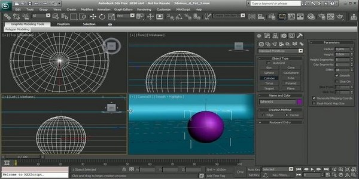

Autodesk 3ds Max (anteriormente 3D Studio Max) es un programa de creación de gráficos y animación 3D desarrollado por Autodesk, en concreto la división Autodesk Media & Entertainment (anteriormente Discreet). Creado inicialmente por el Grupo Yost para Autodesk, salió a la venta por primera vez en 1990 para DOS.
3ds Max, con su arquitectura basada en plugins, es uno de los programas de animación 3D más utilizado, especialmente para la creación de video juegos, anuncios de televisión, en arquitectura o en películas.
Los orígenes del programa 3ds Max podríamos situarlos a mediados de los años 80, con la formación del denominado Grupo Yost.
La gestación del Grupo Yost se inicia a principios de 1984, cuando una de las revistas sobre Atari más importantes, Antic, creaba su sección de software, Antic Software, dirigida por Gary Yost, quien venía de trabajar para la propia compañía Atari. Desde su puesto en Antic Software y junto a Jack Powell crearon The Catalog, una recopilación de programas para la plataforma Atari. 1
En el desarrollo de The Catalog influyó el pequeño desarrollo que se había producido en las comunicaciones a través de Internet, con el inicio de servidores. Uno de estos nuevos servidores era CompuServe, que alojaba varios foros sobre Atari. Uno de los más visitados pertenecía a Antic. Gracias a este servicio, Gary Yost pudo hablar directamente con una gran parte de usuarios, que a su vez después eran quienes compraban y utilizaban el software que producían desde Antic Software. Por otra parte, estos foros proporcionaron un medio a los usuarios de Atari para interactuar entre ellos. Gary Yost vio el potencial que se encerraba en esta “comunidad de usuarios”, haciendo de ella una parte oficial del desarrollo del software para Antic. El brazo online de su comunidad sobre gráficos era la “Cyber Connection”, un foro en CompuServe que proveía de información oficial de los desarrolladores, así como de un sistema de pizarra donde se dejaban mensajes para discutir. La combinación de la colaboración directa entre programadores y usuarios fue esencial a la hora de hacer posible el siguiente desarrollo del software gráfico. 2
Por su parte, el programador Tom Hudson, otro pilar del Grupo Yost, desde 1982 a 1985 había estado trabajando para la otra revista referente dentro del mundo Atari: ANALOG Computing. Había estado haciendo un poco de todo dentro del pequeño grupo que llevaba la revista: escribía artículos, creaba juegos y otros programas. En 1984 publicaba uno de estos programas, un pequeño renderizador de 3D: Solid States. En agosto de 1985 dejaba la revista ANALOG y poco después publicaba otros dos programas para el Atari ST que tuvieron bastante éxito entre los usuarios de Atari: DEGAS y DEGAS elite, ambos programas para pintar. Reviviendo el interés que Tom Hudson tenía por los gráficos en 3D, adaptó su programa Solid States para el Atari ST (originalmente desarrollado para los Ataris de 8-bit, el Atari 400 y el Atari 800). Poco después realizó el que sería su primer programa para Antic: CAD-3D 1.0, y Gary Yost desde entonces se centró en el desarrollo de software gráfico.3
Mientras Tom Hudson y Gary Yost estaban planificando CAD-3D, Mark Kimball, un programador e ingenieron de hardware, que trabajaba para Tektronix en Oregon, estaba desarrollando unas gafas 3D para el Atari ST usando el programa DEGAS. Mark Kimball se puso en contacto con Tom Hudson y finalmente la revista Antic vendería una versión de las gafas que podía utilizarse con la segunda versión de CAD-3D (con Tektronix como productor de las gafas). El siguiente reto que se plantearon fue el de crear pequeñas secuencias animadas. Pero tenían el problema de la reducida RAM que el Atari ST tenía. No obstante, Mark Kimball ideó una solución: Cyber Smash, una aplicación que administraba el proceso de compresión de la animación. Ahora lo que faltaba era un programa que pudiese reproducir esas animaciones renderizadas, pues CAD-3D no podía hacerlo. Gary Yost contrató a Mark para que lo hiciese: Cybermate. El resultado final de este período de innovaciones continuo fue la salida al mercado a principios de 1987 del paquete The Cyber Studio que reunía CAD-3D 2.0 y Cybermate juntos. Poco después se añadió el programa Spectrum 512, un programa de dibujo que usaba los 512 colores del atari, y también Cyber Control, un programa que mediante scrips incrementaba las posibilidades de animación. Por su parte, Gary Yost estaba buscando una forma de mejorar las animaciones producidas por CAD-3D con textos y otros efectos. El resultado de esta búsqueda fue Cyber Paint. Por último, tres importantes aplicaciones se añadieron a la familia Cyber: Cyber texture, que transformaba fotos en geometrías 3D; Cyber VCR, que exportaba las animaciones a cinta de vídeo, a través de la interfaz de Sony CTL-L, y por último Cyber Sculpt, una aplicación para crear y editar complejas geometrías para el CAD-3D 2.0.4
El gran desarrollo del producto The Cyber Studio no pasó desapercibido para la empresa Autodesk, creadores del programa AutoCAD, y a principios de 1988, Eric Lyons, director de Nuevas Tecnologías de Autodesk conseguía convencer a Gary Yost para que trabajase para ellos desarrollando un programa del estilo de The Cyber Studio, para escribir el “AutoCAD de animación 3D”. Gary Yost, con Tom Hudson y Jack Powell, al que se le añadió poco después Dan Silva, fue el grupo encargado de desarrollar el programa 3D Studio.5 6
Tras casi dos años de trabajo, en octubre de 1990, salía al mercado el programa 3D Studio.
En esta primera versión, debido a los problemas inherentes al grado de desarrollo de los ordenadores, y a los problemas con MS-DOS, el programa carecía de una capacidad para deshacer acciones y contaba con 5 módulos independientes que lo hacían poco eficiente: Shaper, Lofter, Editor 3D, Editor de materiales y Módulo de renderizado. Tras el lanzamiento del nuevo programa se creó un foro de ayuda en CompuServe, que se convertiría en uno de los foros más activos de la red en esos momentos. Gary Yost y Jack Powell eran los que dirigían este servicio y empezaron a construir una comunidad de usuarios del 3D Studio. Para la segunda versión del programa consiguieron unificar los 5 módulos gracias a la utilización de un producto de Autodesk llamado Phar Lap Dos Extender, que consistía en un sistema operativo que conseguía superar las limitaciones del estándar DOS.7
En 1991, el Director de Autodesk sugirió al Grupo Yost reescribir el programa para Windows, aunque no fue hasta 1996 que salió al mercado el 3D Studio Max para Windows NT. Además, al no querer perder la marca 3D Studio para la plataforma MS-DOS, añadieron al nombre del producto MAX, para distinguir entre la versión antigua para la plataforma MS-DOS y la nueva versión para la plataforma de Windows. Según Gary Yost “cuando supimos por IBM que WinNT 3.1 iba a salir en el verano de 1993, tomamos la decisión de reescribir el programa”.8 Para ello contrataron a Don Britain en febrero de 1993.9 El nombre oficial completo del producto era Kinetix 3D Studio MAX, puesto que la división Multimedia de Autodesk, la encargada de desarrollar el programa, había pasado a llamarse Kinetix.10
En 1999 Autodesk adquirió la empresa canadiense Discreet Logic, Inc. y la fusionó con Kinetix. Así, de la fusión surgió la división de Autodesk para el desarrollo de 3D Studio MAX.11
No obstante, en el año 2000, al salir al mercado la primera versión del programa desarrollada por la nueva Discreet, el nombre del producto se adaptó al estilo de los productos que Discreet ya tenía, por lo que de 3D Studio MAX pasó a ser 3ds max, todo en minúsculas.12
En el año 2001 Autodesk cambió de nuevo el nombre de su división Discreet por el de “Autodesk Media and Entertainment”, y en la siguiente versión del 3ds también volvió a hacer pequeños cambios. Ahora pasaba a ser el nombre oficial Autodesk 3ds Max, en su versión 9. Esta era la primera versión con la posibilidad de instalarse en un sistema operativo de 32 o de 64 bit.13